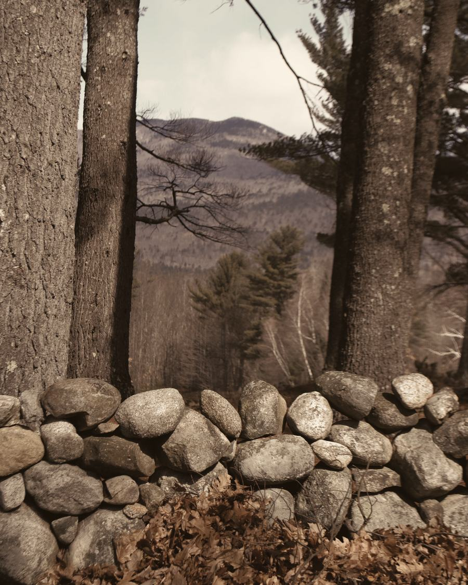
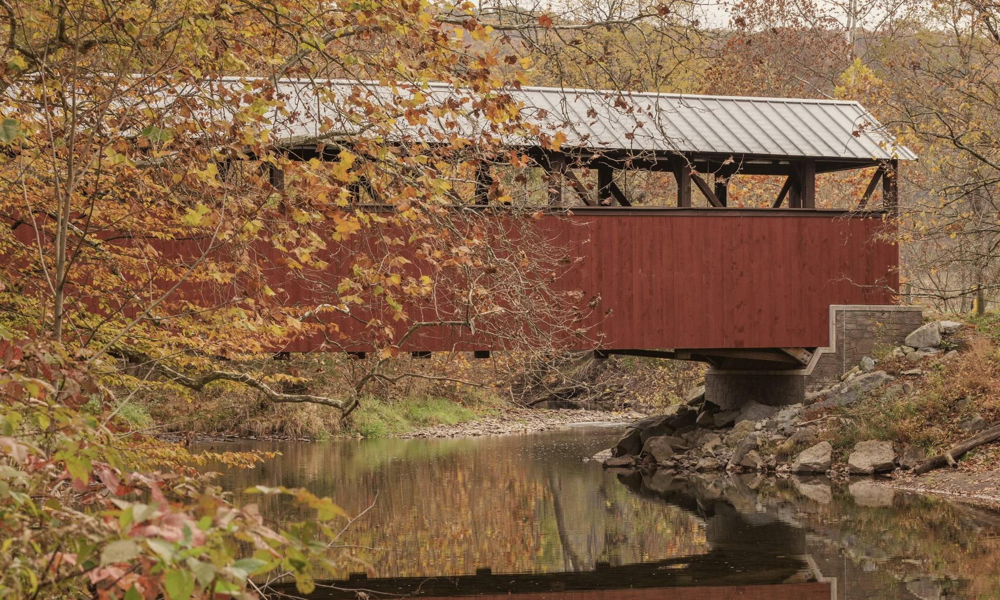
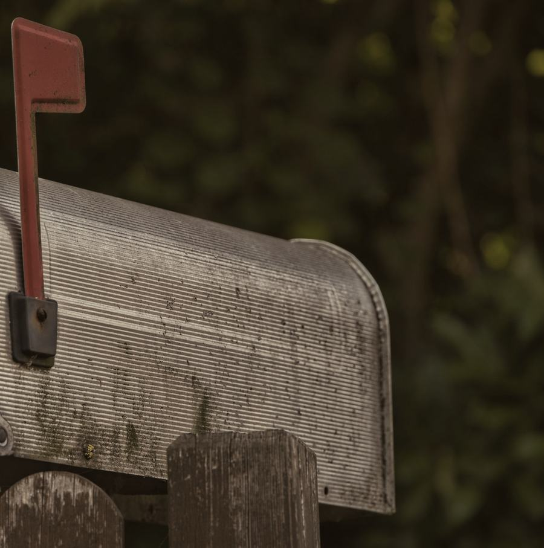

Part 2 ✦ October
A bridge for the hard months.
Animals get sick on their own schedule, not on payday. When the vet bill is bigger than the month, a good home can suddenly feel a long way from the help it needs.
Keep scrolling to walk across
Farmington✦Strafford County✦New Hampshire
Plate I.The hills, turningSeptember
Quietly helping local people keep their animals healthy since 1965: small grants toward vet bills for people who cannot afford care, spay and neuter, food, humane education and a hand for local rescues. Turn the season
The Strafford County Animal Protection Society is a nonprofit in Farmington, New Hampshire. The IRS recognized it as tax-exempt in 1965, and it has been doing the same quiet work since: helping animals by helping the people who care for them.
It makes small grants, mostly toward veterinary bills for people who cannot afford care, and support grants to local rescues. It also funds spay and neuter, medical care, food and humane education.
1965. The first ring.



Part 2 ✦ October
Animals get sick on their own schedule, not on payday. When the vet bill is bigger than the month, a good home can suddenly feel a long way from the help it needs.
Keep scrolling to walk across
Midstream
Its small grants go mostly toward veterinary bills for people who cannot afford care, so the animal gets seen and treated close to home.
The far bank
Spay and neuter, food and humane education: the steady, everyday care that keeps animals healthy long before anyone needs a bridge.
Pick a woodblock from the type case and press it onto the page.
No. 1 of 5
Small grants, mostly toward veterinary bills and medical care, for people who cannot afford the care their animal needs.
Grants are small and decided by the Society. How grants work, and how to ask

Plate VIII.Brick mills along the river
Part 4 ✦ Late November
Mill towns, back roads, farmhouses at the end of long driveways. The Society works for the people of Strafford County and the animals they love, and it is reached the old-fashioned way: by mail, or by phone on (351) 207-8729.
Gifts and grant enquiries both go by mail to Farmington. Choose a letter below, fill in the brackets, and put it in the mailbox. For the details, read how grants work or how to give.

Grants are decided by the Society, and a letter is the first step. Writing does not guarantee a grant or a set amount.
Crypto donation partner
Origin Labs introduces the Society to supporters across the crypto community: new neighbors for a New Hampshire cause that dates to 1965.
501(c)(3) recognised by the IRS, EIN 02-6013420